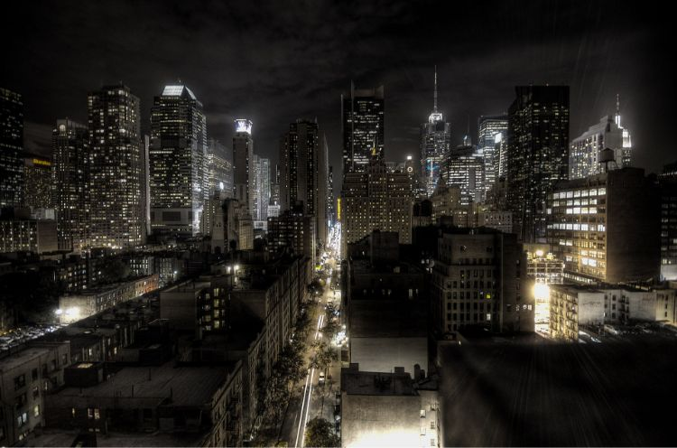

Batman un super-héros qui pollue ?
Batman est un super-héros connu par tout le monde. Avec un costume ressemblant à une chauve-souris, cet héros de l'ombre part lutter contre le crime pendant la nuit. Mais, malheureusement cela créer des conséquences écologique importantes. Sa Batmobile en est la preuve.
Biographie de Batman
Batman est un héros de fiction créé par DC comics en 1939. Dernièrement apparu dans justice League. Son histoire promet d'être encore
Lire la suite
L’impact environnemental de Batman
Malgré que Batman soit un super-héros, il est un des héros qui pollue le plus. En effet, on peut le voir avec ça Batmobile qui consomme beaucoup.
Lire la suiteLes solutions possible
On a plusieurs solutions à ce problème. Mais alors quelle est la meilleur de ces solutions ?
Lire la suite